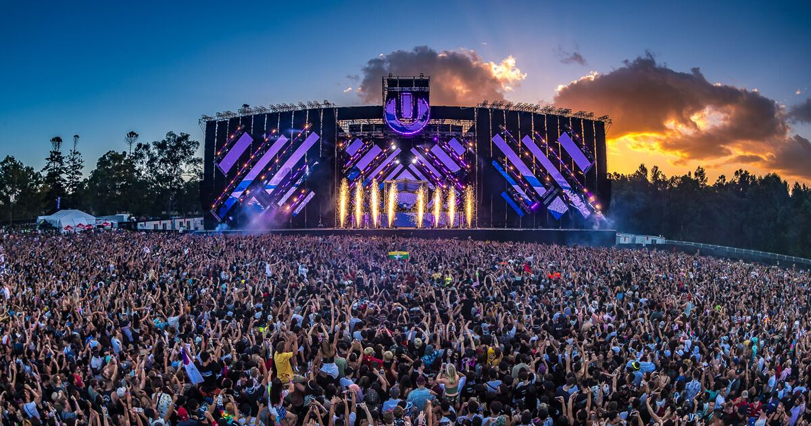

Festivals · Music
Ultra Australia 2027
- Dates
- –
- Venue
- Flemington Racecourse (Melbourne) and Doug Jennings Park (Gold Coast)
- Location
- Melbourne, Australia
- Format
- In-person
- Category
- Music
- Industry
- Music
- Organiser
- Ultra Worldwide
- Official website
- https://ultraaustralia.com/
About
The official site lists "April 17 & 18, 2027" across Flemington Racecourse, Melbourne and Doug Jennings Park, Gold Coast without stating which city is on which day. Dates are local Australian dates (AEST/AEDT, ACST/ACDT or AWST depending on state).
Topics: electronic dance music, touring festival.
No organiser attendance figure found on official pages (23 Nov 2026). Ranked by an estimated size tier 'large' (our judgement from format, venue and scale, not an official number).
Sources
- Official — https://ultraaustralia.com/